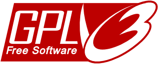

Cube Simulator

Contenido
[ocultar]Introducción
Cube Simulator son una serie de herramientas para el estudio de la locomoción de los robot ápodos (topologías de 1D) de los grupos cabeceo-cabeceo y cabeceo-viraje. Se desarrollaron inicialmente para la realización de los experimentos de la tesis doctoral "Robótica Modular y Locomoción: Aplicación a Robots Ápodo"
Características
- Plataforma: Debian GNU/Linux
- Motor físico: Open Dynamics Engine (ODE)
- Lenguaje C
- Representación 3D: OpenGL
- Algorítmos genéticos: Pgapack, versión 1.0
- Representación de los datos: Octave
- Robots: Movimiento de los robots: Cube Revolutions, Hypercube y MiniCube
Pantallazos


Herramientas
El simulador lo constituyen diferentes aplicaciones y librerías, cada una con un propósito. Las principales son:
- Librería RTK. Es la librería principal que permite definir los robots ápodos, construirlos, renderizarlos en 3D y simularlos.
- View. Visualización en 3D de la locomoción de los robots ápodos.
- Osciloscopio. Obtención de datos (velocidad, posición, rotaciones...)
- GA. Búsquedas mediante algoritmos genéticos
- Play. Movimiento de robots reales
Ejemplos de simulación
Grupo cabeceo-cabeceo
| Comando | Descripción |
|---|---|
| ./View `./Pn 32 12 32 23 0` | Línea recta. 32 Módulos |
| ./View `./Pn 8 85 32 90 0` | Línea recta. 8 módulos (Cube Revolutions) |
| ./View `./Pn 2 60 32 110 0` | Línea recta. 2 módulos. Configuración mínima PP. (Minicube-I) |
Grupo cabeceo-viraje
| Comando | Descripción |
|---|---|
| ./View `./PYn 32 32 20 0 0 0 45 0 0` | Línea recta. 32 módulos. |
| ./View `./PYn 8 32 45 0 0 0 135 0 0` | Línea recta. 8 Módulos. Hypercube |
| ./View `./PYn 3 32 60 0 0 0 110 0 0` | Línea recta. 3 Módulos. Configuración mínima. Minicube-II |
| ./View `./PYn 18 32 70 0 0 10 120 0 0` | Giro. 18 Módulos |
| ./View `./PYn 8 32 20 0 0 22 120 0 0` | Giro. 8 Módulos. Hypercube |
| ./View `./PYn 20 32 10 10 0 0 0 0 90` | Rodar. 20 Módulos |
| ./View `./PYn 8 32 30 30 0 0 0 0 90` | Rodar. 8 Módulos. Hypercube |
| ./View `./PYn 3 32 60 60 0 0 0 0 90` | Rodar. 3 Módulos. Configuración mínima. Minicube-II |
| ./View `./PYn 32 32 15 40 0 0 90 45 0` | Rotación. 32 Módulos |
| ./View `./PYn 8 32 20 40 0 0 180 90 -45` | Rotación. 8 Módulos. Hypercube |
| ./View `./PYn 3 32 30 40 0 0 180 0 90` | Rotación. 3 Módulos. Configuración mínima. Minicube-II |
| ./View `./PYn 16 32 10 20 0 0 90 0 90` | Rotación en U. 16 módulos |
| ./View `./PYn 8 32 10 40 0 0 180 0 90` | Rotación en U. 8 Módulos. Hypercube |
| ./View `./PYn 32 20 7 40 0 0 -45 -45 112` | Desplazamiento lateral. 32 Módulos. |
| ./View `./PYn 8 32 10 40 0 0 90 90 45` | Desplazamiento lateral. 8 Módulos. Hypercube |
| ./View `./PYn 32 32 20 20 0 0 -22 -22 0` | Lateral Inclinado. 32 Módulos. |
| ./View `./PYn 8 24 40 40 0 0 -90 -90 60` | Lateral inclinado. 8 Módulos. Hypercube |
| ./View `./PYn 16 32 2 2 0 0 0 0 90` | Remero. 16 Módulos |
| ./View `./PYn 8 32 7 7 0 0 0 0 90` | Remero. 8 Módulos. Hypercube |
| ./View `./PYn 3 100 30 30 0 0 0 0 90` | Remero. 3 Módulos. Configuración mínima. Minicube-II |
Vídeos

|
VER VIDEO Simulación del robot Cube Revolutions (8 módulos, grupo cabeceo-cabeceo). Se muestran la variación en la locomoción del robot al aplicar diferentes parámetros. |

|
VER VIDEO Simulación del robot Hypercube (8 módulos, grupo cabeceo-viraje). Se muestran diferentes modos de locomoción |
|
Generando videos
Para obtener vídeos de las simulaciones seguir los siguientes pasos:
- Crear el diretorio frame desde donde se esté invocando la herramienta de simulación.
- Arrancar la simulación.
- Para comenzar la captura pulsar control-W. Se empezarán a crear imágenes comenzando por frame0001.ppm. Se almacenan en el directorio frame.
- Pulsar control-W para finalizar la captura.
- Entrar en el directorio frame y ejecutar:
ffmpeg -f image2 -i frame%04d.ppm misimulacion.mpg
Es necesario tener instalada la aplicación ffmpeg (paquete ffmpeg en Debian)
Concatenación de vídeos
Si se tienen varios vídeos separados y se quieren concatenar para obtener un vídeo que los incluya a todos, se puede usar el comando cat:
cat video1.mpg video2.mpg video3.mpg > mi_video_largo.mpg
Descargas
Versión: 1.1
| Fichero | Descripción |
|---|---|
| Cube_simulator-1.1.tar.gz | Fuentes |
| Cube_simulator-1.1-bin.tar.gz | Binarios compilados para Linux (Debian Lenny 5.0), con ODE 0.9 |
Versión: 1.0
| Fichero | Descripción |
|---|---|
| Cube_simulator-1.0.tar.gz | Fuentes |
| Cube_simulator-1.0-bin.tar.gz | Binarios compilados para Linux (Debian Etch 4.0), con ODE 0.5 |
Dependencias
- Para el funcionamiento del simulador tiene que estar instalado el Open Dynamics Engine (ODE).
- Instalación en Debian/Lenny:
- Es necesaria la version 0.9 del ODE. Instalación:
apt-get install libode0debian1
- Instalación en Debian/Etch:
- Es necesaria la versión 0.5 del ODE. Instalación:
apt-get install libode0c2
Licencia
 |
Cube Simulator es Software libre distribuido bajo la licencia GPL v3.0 |

Cambios
Version 1.1
- Migración a ODE 0.9 y Debian Lenny (5.0).
- Las simulaciones funcionan ahora mucho más rápidas
- Bug solucionado: Ya no se produce el segmentation fault cuando hay muchos puntos de contacto con el suelo
- Ya no se usan articulaciones para la unión entre módulos, sino objetos rígidos constituidos por dos geometrías
Version 1.0
- Versión inicial. Creada para la realización de los experimentos de la tesis doctoral: "Robótica Modular y Locomoción: Aplicación a Robots Ápodo"
- La plataforma de desarrollo es una Debian Gnu/Linux Etch (4.0), con la versión 0.5 del ODE
- Bugs:
- Cuando existen muchos puntos de contacto con el suelo, el simulador da un "segmentation fault".
Autor
Desarrolladores
Acceso al repositorio
- SVN del proyecto http://svn.iearobotics.com/cube_simulator/
Obtener la versión 1.1 del SVN:
svn co http://svn.iearobotics.com/cube_simulator/cube_simulator-1.1/
versión 1.0 :
svn co http://svn.iearobotics.com/cube_simulator/cube_simulator-1.0/
Noticias
- 29/Dic/2008: Publicada versión 1.1
- 26/Dic/2008: Publicada versión 1.0.
- 21/Dic/2008: Comenzada esta página